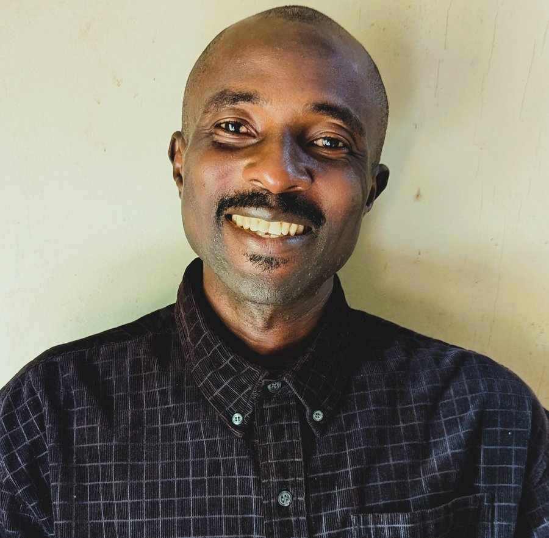
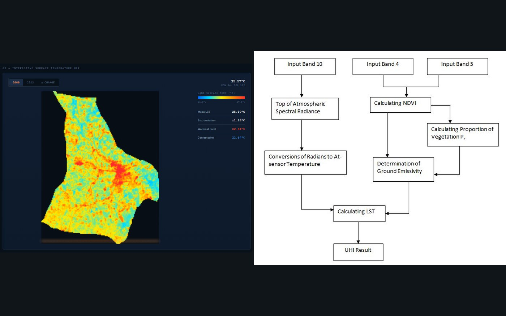
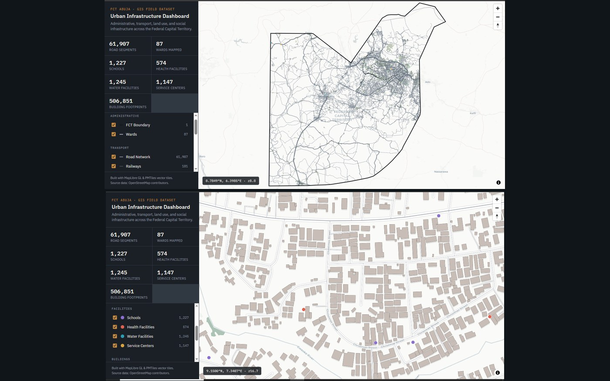
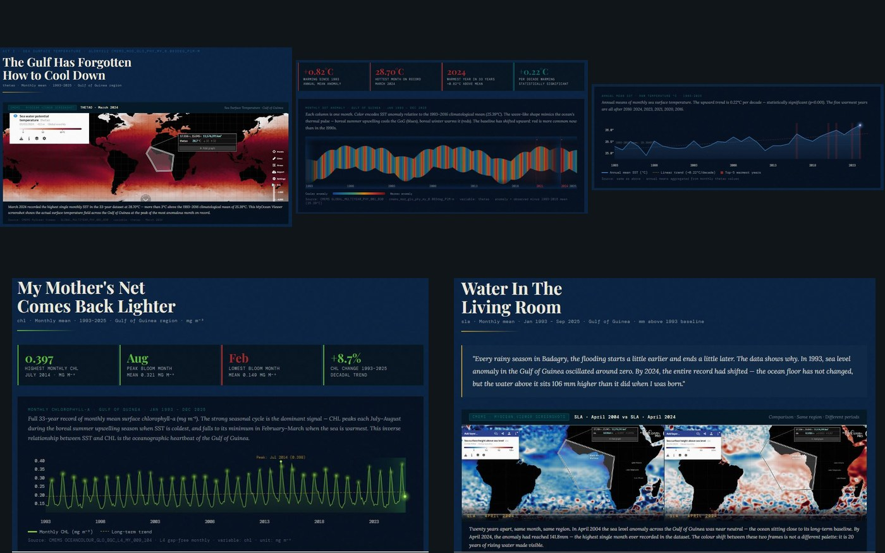
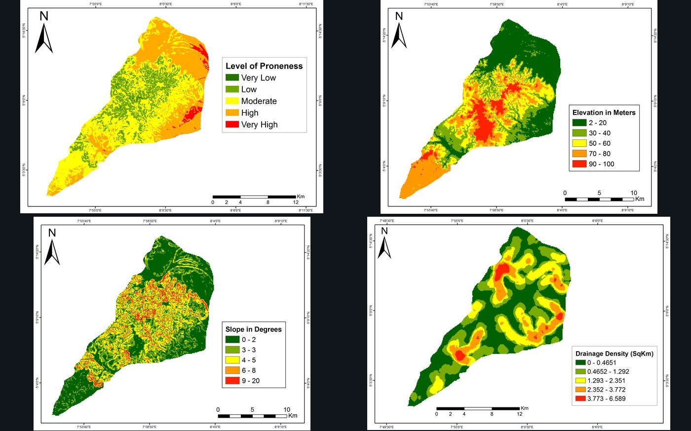
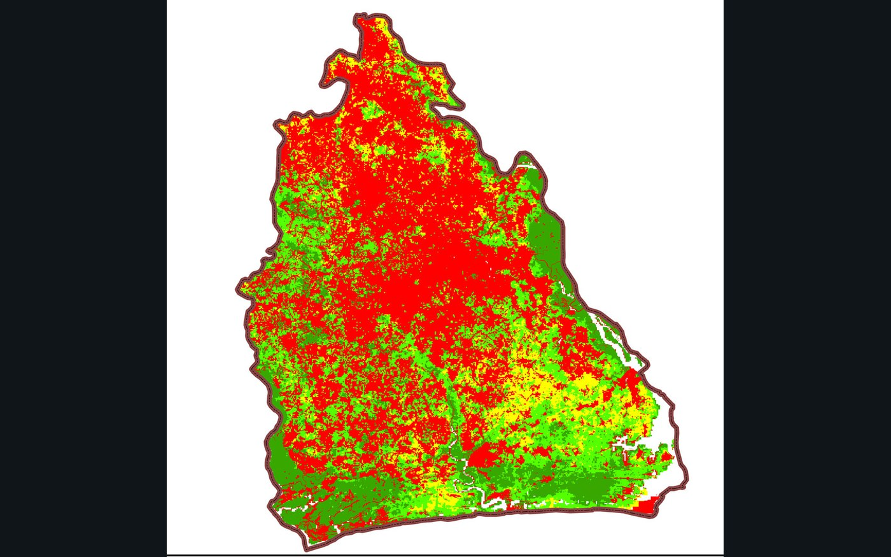

Problem
Process
Outcome
Transforming geospatial data into intelligent, data-driven solutions that shape smarter decisions and sustainable communities.

I am a GIS Analyst with experience transforming geospatial data into practical solutions for urban planning, environmental management, climate resilience, and infrastructure development. I specialize in Geographic Information Systems (GIS), remote sensing, spatial analysis, and interactive web mapping, using tools such as ArcGIS Pro, QGIS, Python, and the Esri ecosystem to uncover patterns, support data-driven decisions, and communicate complex spatial information through clear, engaging visualizations.
My work combines technical expertise with problem-solving to deliver accurate, actionable insights for government agencies, organizations, and development projects. From flood risk assessment and land suitability analysis to service accessibility mapping and climate data visualization, I am passionate about using geospatial technology to solve real-world challenges and create meaningful impact. I am always eager to collaborate on innovative projects that turn location intelligence into better decisions.

A 23-year land surface temperature study tracking how Umuahia warmed as the city grew, built from Landsat 7 and Landsat 8/9 imagery.
View Case Study →
An interactive vector-tiled web map of the FCT bringing together boundaries, roads, land use, and nearly 570,000 building footprints.
View Case Study →
An interactive data story for the Copernicus Ocean Sessions Dataviz Challenge, tracing 30 years of warming, rising seas, and a shifting food web in the Gulf of Guinea.
View Case Study →
Undergraduate GIS research combining AHP and weighted overlay to map flood risk across Itu LGA, validated against 400 household surveys.
View Case Study →
A fuzzy logic suitability model combining 11 soil, climate, and terrain factors to map where cassava cultivation performs best.
View Case Study →Placeholder quote. Replace with real feedback describing the quality of the analysis, communication, and turnaround time on a project.
Placeholder quote. Replace with real feedback describing collaboration, technical depth, or the impact of the delivered maps and analysis.
Placeholder quote. Replace with real feedback describing reliability, problem-solving, or the outcome of a specific engagement.
Have a project involving mapping, spatial analysis, or remote sensing? Send a message and I'll get back to you.